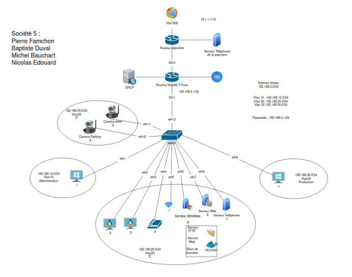
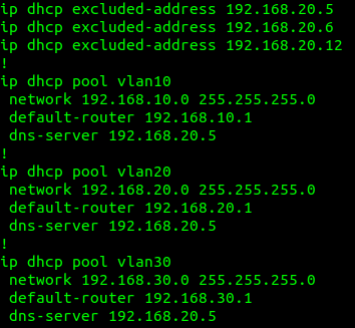
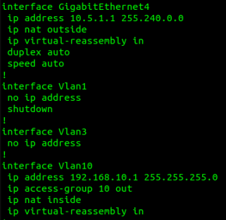
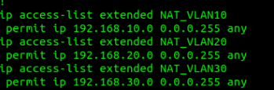
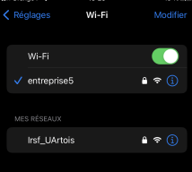
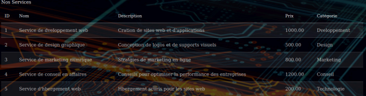

CREIL-SOCIETY
Déploiement complet d'un Système d'Information pour une pépinière d'entreprises.
02. Architecture Physique et Logique
L'architecture repose sur une hiérarchie Cisco à deux niveaux. En cœur de réseau, un routeur Cisco 2911 assure le routage inter-VLAN et la sortie vers le FAI. La distribution est gérée par un switch Catalyst 2960. Nous avons implémenté une segmentation stricte pour répondre aux besoins de conformité et de performance :
- VLAN 10 (ADMIN) : Postes d'administration et management.
- VLAN 20 (INFO) : Postes clients et production.
- VLAN 30 (EXPLOITATION) : Serveurs de l'entreprise (Windows, Docker).
- VLAN 40 (VOIP) : Flux voix prioritaires.
- VLAN 50 (WIFI) : Accès sans fil pour les invités et collaborateurs.

03. Routage et Services Réseaux
Adressage & DHCP
Le plan d'adressage a été conçu pour optimiser l'utilisation des masques de sous-réseau. Le routeur fait office de serveur DHCP pour la majorité des VLANs, avec des exclusions pour les adresses statiques des serveurs.

NAT & PAT
Pour permettre l'accès à l'Internet de la pépinière (VLAN 800), nous avons configuré du NAT (Network Address Translation). L'interface GigabitEthernet0/0 est définie comme ip nat outside, tandis que nos sous-interfaces VLAN sont ip nat inside. L'utilisation du mot-clé overload (PAT) permet à tous nos utilisateurs internes de sortir avec l'unique adresse IP publique allouée à la Société 5.

04. Stratégie de Sécurité (ACL)
La sécurité est le pilier de notre installation. Nous avons utilisé des ACL Etendues pour filtrer le trafic de manière granulaire. Par exemple, le VLAN WIFI a accès à Internet mais ne peut en aucun cas tenter de joindre le VLAN ADMIN ou d'accéder aux interfaces de management des équipements réseaux via SSH.
access-list 101 deny ip 192.168.50.0 0.0.0.255 192.168.10.0 0.0.0.255
access-list 101 permit ip any any

Nous avons également intégré une Caméra IP sur un port dédié du switch, isolée par une ACL spécifique permettant uniquement au serveur d'enregistrement (VLAN 30) de récupérer le flux RTSP.
05. Infrastructure WiFi
Le déploiement WiFi a été réalisé via une borne configurée en mode accès. Nous avons défini un SSID "Creil-Society_WiFi" sécurisé par le protocole WPA2-Enterprise. Le trafic sans fil est encapsulé dans le VLAN 50, garantissant qu'un utilisateur mobile est soumis aux mêmes restrictions de sécurité qu'un utilisateur filaire.

06. Services Conteneurisés & BDD
Pour plus de flexibilité, nous avons choisi de ne pas utiliser de serveurs physiques pour chaque service. Nous avons déployé une architecture Docker sur une machine Linux.
- Conteneur Web : Serveur Apache hébergeant notre site de vente.
- Conteneur Database : MySQL stockant l'inventaire des produits.
- Conteneur TFTP : Dédié à la sauvegarde automatisée des fichiers 'running-config' de nos équipements Cisco.

07. Administration Windows Server
Le serveur Windows Server 2022 agit comme le cerveau administratif. Nous avons configuré l'Active Directory (AD DS) pour gérer les identités. Les utilisateurs sont organisés par Unités Organisationnelles (UO) correspondant à leurs services. Des GPO (Group Policy Objects) ont été mises en place pour mapper automatiquement des lecteurs réseaux selon le profil de l'utilisateur et pour restreindre l'accès au panneau de configuration sur les postes clients.

08. IoT : Surveillance Environnementale
La sécurité passe aussi par la surveillance physique. Nous avons programmé une carte Arduino équipée d'un capteur de température. Un script Python interroge la carte via le port série, traite les données et les insère automatiquement dans notre base de données MySQL toutes les 5 minutes. Une alerte visuelle se déclenche en cas de dépassement du seuil critique (25°C) dans la baie de brassage.
import serial, mysql.connector
ser = serial.Serial('/dev/ttyACM0', 9600)
# Insertion SQL...
Livrable Final
Ce projet a validé ma capacité à concevoir une solution IT de bout en bout, de la couche physique à la couche applicative.
CONSULTER LE RAPPORT COMPLET (58 PAGES)